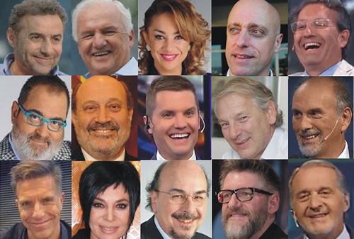

Real Chubut - Agencia de Noticias


El escándalo de la millonaria pauta macrista para los “periodistas militantes”

Más allá de la pauta publicitaria que reciben los medios dominantes que los contratan, los periodistas militantes del gobierno macrista reciben grandes cantidades de dinero público a título personal. Millones de pesos que son destinados implícitamente a alimentar el favoritismo que expresan cada día por Cambiemos y a alentarlos a seguir haciendo foco en “la corrupción K” a más de dos años de existir un gobierno infinitamente más corrupto que el anterior.
Un caso testigo de los excesos en la pauta macrista es el del “panelista” de Majul, y ex conductor radial, Ari Paluch (denunciado por acoso sexual), quien en solo 22 meses (entre 2015 y 2016) recibió más de nueve millones de pesos en concepto de Pauta Oficial del gobierno de CABA y de Nación. Una friolera de 400.000 pesos mensuales.
Letra P publicó un relevamiento de pauta oficial que incluye el dato de que en estos dos años Macri invirtió casi $6 millones “de la plata de nuestros impuestos” en las productoras de solo 5 periodistas, Luis Majul (La Cornisa Producciones, $2,2 millones), Joaquín Morales Solá (JMS y Asociados S.A., $1,1 millones), Alfredo Leuco (L y M Producciones S.R.L., $940 mil), Luis Novaresio (Comunicación Publicitaria SRL, $830 mil) y Marcelo Longobardi (LRH Producciones S.A., $750 mil).
Los mencionados no son los únicos, apenas son cinco que generan mucha repercusión. Sin dura que están entre los más abastecidos por el Estado nacional. La lista es tan larga como voces favorables uno pueda escuchar, ver o leer, y no solo se utiliza la caja de Nación para “subsidiar opiniones”, la Cámara de Diputados y la de Senadores, los gobiernos de la provincia de Buenos Aires y el de la Ciudad; y los municipios más grandes de Cambiemos también operan como sostenedores de periodistas “amigos”, que mes a mes engrosan los suculentos sueldos que reciben en los medios en los que trabajan con pauta oficial que no deberían recibir.
Las cifras publicadas ayer por Letra P tampoco son la totalidad de los montos con que los periodistas son favorecidos, esas cifras son las “oficiales”. Las que se pueden identificar fácilmente por estar “en la superficie”. Hay otros modos para favorecer a periodistas, trabajos “extracurruculares” como presentaciones de muestras (Majul), blogs y páginas webs que nadie visita ni conoce (Novaresio, Oliván, Mónica Gutierrez, Fabián Doman), o simples PNT (publicidad no tradicional) en la que se incluyen “auspicios” de los municipios o de los bancos y demás empresas estatales.
De hecho solamente Luis Majul cobró entre 2015 y 2017 unos 10 millones del Gobierno Nacional, siendo que ya lleva recaudados entre 2008 y 2017 otros 24 millones del Gobierno de la Ciudad de Buenos Aires entre. El propio Hernán Lombardi reconoció que le había pagado $960 mil a la productora del periodista por realizar un video de 4 minutos para el sistema de medios que dirige.
A esto hay que sumarle el escándalo de los 21 millones de pesos que Fernando Niembro cobró de la Ciudad de Buenos Aires y que le costó no solo su candidatura a diputado, sino también un par de años de proscripción de los medios en los que trabajaba.
Y tampoco están ajenos a la pauta los “panelistas” y conductores de programas de bajo rating, personajes secundarios del periodismo diverso que aportan opinión política desde lugares marginales, Como Fabian Doman, que por un portal inexistente le factura cientos de miles de pesos al estado mediante un portal llamado “enciclomedios.com” que Alexa (portal de medición de medios digitales) ni siquiera ranquea.
Hace algunas semanas, el portal de investigación El Disenso desnudó uno de los tantos que se fueron conociendo en estos dos años de macrismo, el de la “arrepentida” María Julia Olván, quien pasó de conducir 678 a convertirse en una de las más violentas detractoras del kirchnerismo. Oliván esconde pautas de Cambiemos por más de 500.000 pesos al año, repartidos entre la cámara de Senadores, el gobierno de la Ciudad y la jefatura de Gabinete. A todo ese dinero Cambiemos lo “invierte” en su portal (BorderPeriodismo), una página que nadie conoce y que hay días en los que no registra ni una sola visita.
Obviamente, son portales abiertos como excusa, solamente destinados a recibir pauta, para que sus propietarios opinen a favor de Cambiemos en los diferentes medios en los que trabajan. Y los casos se repiten, a finales de 2017 también se había conocido una cifra similar a la de Oliván para Mónica Gutiérrez, quien justifica los dineros recibidos con un desconocido blog personal www.monicagutierrez.com.ar.
Y la cosa no termina ahí, ambas periodistas tienen maridos empresarios que son favorecidos con negocios o con obra pública. En el caso de Gutiérrez, su marido, Alejandro Fabián Gawanski fue favorecido con la compra de unos terrenos fiscales para un emprendimiento inmobiliario porsonal. El esposo de Oliván, Ariel Straccia, es beneficiario de Obra Pública como proveedor de hormigón de obra. Recientemente fue contratado por el Estado para el nuevo aeropuerto del Palomar.
Pero hay más, en el caso de quienes no tienen parejas que puedan contratar servicios del estado, las esposas o esposos de periodistas amigos son favorecidos con cargos públicos, tales los casos de la pareja de Alfredo Leuco, Cecilia Brook, quien fue nombrada por Gabriela Michetti en el Senado, al igual que la esposa de Luis Majul, María Elizabeth Conte Grand, y la de Carlos Pagni, María Susana Alló, las tres con sueldos altísimos. También está el caso de Ceferino Reato, cuya esposa, María Pía Moreyra, está nombrada en el Ministerio de Cultura con un sueldo de alrededor de 100.000 pesos.
Otra de Pagni, ex socio en la producción de su programa de televisión con el actual ministro de Economía Nicolás Dujovne (entonces también columnista del programa), cobraba pauta del senado a través del ministro, quien a pesar de haber designado en ese cargo en diciembre de 2016 cobró “publicidad” al Senado de la Nación, al menos hasta marzo de 2017.
Sin alejarnos de la vicepresidenta valdría la pena recordar una denuncia que recibió por abusar de la pauta publicitaria del Senado, en marzo de 2017 El Disenso descubrió que la vicepresidenta gastaba más de tres millones mensuales en publicidad. Los periodistas “de guerra” Julio Blanck y Eduardo Van Der Kooy se llevaban entonces casi 200. 000 pesos cada 30 días para “ponerse el casco”.
Hay un rango de periodistas que lideran franja horaria (Lanata, Del Moro, Fantino), que son defensores y justificadores de todas las acciones del Macrismo pero eligen no facturarle al Estado, exigiendo que los medios que los contratan compartan con ellos parte de lo que reciben de los diferentes gobiernos. Ellos cobran sueldos que son realmente obscenos para “jugar” abiertamente al gobierno. ¿Podría alguien que conozca su historia creer que Lanata es macrista por convicción?
Sin embargo, Roberto Navarro denunció el año pasado en El Destape, que esas figuras que no quieren “quedar pegadas” también se reúnen en determinados lugares con funcionarios del gobierno y reciben dinero en negro y “en efectivo” que no figura en ningún lado.
Los casos mencionados en esta nota son solo algunos de los que fueron descubiertos en los últimos dos años por investigaciones periodísticas. Pero no son los únicos, Macri y “sus tenientes” gastan lo que jamás gastó nadie en los medios, por adentro y “por afuera”. ese gasto, que el gobierno considera una inversión persigue un único propósito: controlar, como sea, el discurso público para que haya un relato único. Algo que Cambiemos viene logrando con absoluto éxito desde hace dos años.
Fuente: Contrapoder